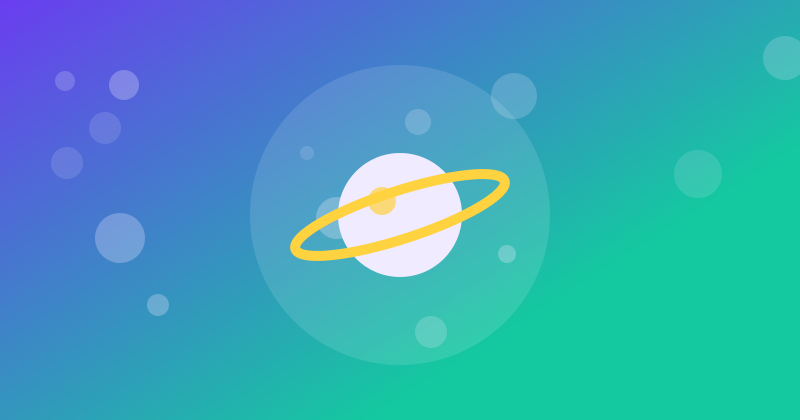

El Sistema Solar
El sistema solar es un sistema planetario que comprende ocho planetas y otros objetos astronómicos que giran alrededor del Sol

Introducción
El sistema solar es un sistema planetario que comprende ocho planetas y otros objetos astronómicos que giran alrededor del Sol. La estrella concentra el 99,86% de la masa del sistema solar, y la mayor parte de la masa restante se concentra en ocho planetas cuyas órbitas son prácticamente circulares y transitan dentro de un disco casi llano llamado plano eclíptico. El sistema solar se ubica en la actualidad en la nube Interestelar Local que se halla en la Burbuja Local del brazo de Orión, de la galaxia espiral Vía Láctea, a unos 28 000 años luz del centro de esta.
La formación del sistema solar se estima que ocurrió hace unos 4600 millones de años a partir del colapso de una nube molecular. El material residual originó un disco circunestelar protoplanetario en el que ocurrieron los procesos físicos que llevaron a la formación de los planetas. El sistema solar se divide en varias regiones, incluyendo el cinturón de asteroides, el cinturón de Kuiper y la nube de Oort.
Planetas del Sistema Solar
Los cuatro planetas más cercanos al Sol, Mercurio, Venus, Tierra y Marte, son conocidos como planetas terrestres y están compuestos principalmente por roca y metal. Los cuatro planetas más alejados, Júpiter, Saturno, Urano y Neptuno, son conocidos como gigantes gaseosos y están compuestos de hielo y gases. Los planetas terrestres tienen composiciones densas y rocosas, pocas lunas o ninguna, y no hay sistemas de anillos. Se componen en gran parte de minerales refractarios, tales como los silicatos, que forman costras y sus mantos, y metales tales como el hierro y el níquel, que forman sus núcleos.
Los gigantes gaseosos, por otro lado, están compuestos principalmente de helio e hidrógeno. Urano y Neptuno, denominados gigantes helados, están formados mayoritariamente por agua congelada, amoniaco y metano. El Sol es el único cuerpo celeste del sistema solar que emite luz propia, debido a la fusión termonuclear del hidrógeno y su transformación en helio en su núcleo.
Formación del Sistema Solar
La formación del sistema solar se estima que ocurrió hace unos 4600 millones de años a partir del colapso de una nube molecular. El material residual originó un disco circunestelar protoplanetario en el que ocurrieron los procesos físicos que llevaron a la formación de los planetas. La hipótesis nebular sostiene que hace 4600 millones de años el sistema solar se formó por un colapso gravitacional de una nube molecular gigante. Esta nube inicial tenía probablemente varios años luz de largo y fue la sede del nacimiento de varias estrellas.
La teoría nebular sostiene que la formación del sistema solar comenzó con el colapso de una nube molecular gigante. La mayor parte de la masa colapsante se reunió en el centro, formando el Sol, mientras que el resto se aplanó en un disco protoplanetario a partir del cual se formaron los planetas, satélites, asteroides y otros cuerpos menores del sistema solar. El sistema solar evolucionó mucho desde su formación inicial. Muchas lunas se formaron a partir de discos de gas y polvo circulares alrededor de los planetas a los que pertenecen, mientras se cree que otras lunas se formaron de manera independiente y más tarde fueron capturadas por sus planetas.
Regiones del Sistema Solar
El sistema solar se divide en varias regiones, incluyendo el cinturón de asteroides, el cinturón de Kuiper y la nube de Oort. El cinturón de asteroides es una región que se encuentra entre Marte y Júpiter y está compuesta principalmente por roca y metal. El cinturón de Kuiper es una región que se encuentra más allá de la órbita de Neptuno y está compuesta por objetos transneptunianos formados por agua, amoníaco y metano.
La nube de Oort es una región que se encuentra a gran distancia del Sol y está compuesta por cometas de período largo. La nube de Oort es la fuente de los cometas de período largo y se cree que es el límite del sistema solar. El sistema solar también incluye objetos menores, como asteroides, cometas y centauros. Los asteroides son objetos rocosos que orbitan alrededor del Sol, mientras que los cometas son objetos que se acercan al Sol y emiten gas y polvo.
Objetos Menores del Sistema Solar
El sistema solar también incluye objetos menores, como asteroides, cometas y centauros. Los asteroides son objetos rocosos que orbitan alrededor del Sol, mientras que los cometas son objetos que se acercan al Sol y emiten gas y polvo. Los centauros son objetos que orbitan entre Júpiter y Neptuno y están compuestos por hielo y roca. Los asteroides cercanos a la Tierra (NEAs) son objetos que se encuentran en órbitas que los acercan a la Tierra.
El cinturón de asteroides es una región que se encuentra entre Marte y Júpiter y está compuesta principalmente por roca y metal. En este cinturón se encuentra el planeta enano Ceres. Los asteroides troyanos de Júpiter son objetos que se encuentran en órbitas que los mantienen cerca de Júpiter. La familia de los centauros es un grupo de objetos que orbitan entre Júpiter y Neptuno y están compuestos por hielo y roca.
Tabla Comparativa de los Planetas
| Planeta | Masa | Diámetro | Orbita |
|---|---|---|---|
| Mercurio | 3,3022 x 10^23 kg | 4879 km | 87,97 días |
| Venus | 4,8695 x 10^24 kg | 12104 km | 224,7 días |
| Tierra | 5,9723 x 10^24 kg | 12756 km | 365,25 días |
| Marte | 6,4171 x 10^23 kg | 6794 km | 686,98 días |
| Júpiter | 1,8986 x 10^27 kg | 142984 km | 4332,62 días |
| Saturno | 5,6846 x 10^26 kg | 116460 km | 10759,22 días |
| Urano | 8,6810 x 10^25 kg | 50724 km | 30687,15 días |
| Neptuno | 1,0243 x 10^26 kg | 49528 km | 60190,03 días |
Cronología de la Formación del Sistema Solar
La formación del sistema solar ocurrió hace unos 4600 millones de años. A continuación, se presenta una cronología de los eventos más importantes:
- 4600 millones de años atrás: Colapso de la nube molecular que dio origen al sistema solar.
- 4500 millones de años atrás: Formación del Sol y los planetas.
- 4000 millones de años atrás: Formación de la Luna y los satélites de los planetas.
- 3000 millones de años atrás: Formación de la atmósfera y los océanos de la Tierra.
- 2000 millones de años atrás: Aparición de la vida en la Tierra.
La formación del sistema solar fue un proceso complejo que involucró la formación de la estrella, los planetas, los satélites y otros cuerpos menores. La cronología de la formación del sistema solar es un tema de estudio y debate entre los científicos, y se espera que futuras investigaciones y descubrimientos puedan proporcionar más información sobre la historia del sistema solar.
Fuentes
❓ Preguntas frecuentes
¿Cuántos planetas hay en el sistema solar?
8 planetas
¿Cuál es el planeta más grande del sistema solar?
Júpiter
¿Cuál es el planeta más pequeño del sistema solar?
Mercurio
🧩 Artículos relacionados
 La Revolución IndustrialLa Revolución Industrial fue un proceso de transformación económica, social y tecnológica que se inició en el siglo XVIII
La Revolución IndustrialLa Revolución Industrial fue un proceso de transformación económica, social y tecnológica que se inició en el siglo XVIII
 Historia de ColombiaLa historia de Colombia abarca desde la época precolombina hasta la actualidad, con una rica diversidad cultural y política
Historia de ColombiaLa historia de Colombia abarca desde la época precolombina hasta la actualidad, con una rica diversidad cultural y política

Cómo hacer una hoja de vida sin experiencia laboralAprende a crear una hoja de vida sin experiencia, destacar tus habilidades y presentar tu perfil para aumentar tus oportunidades laborales.